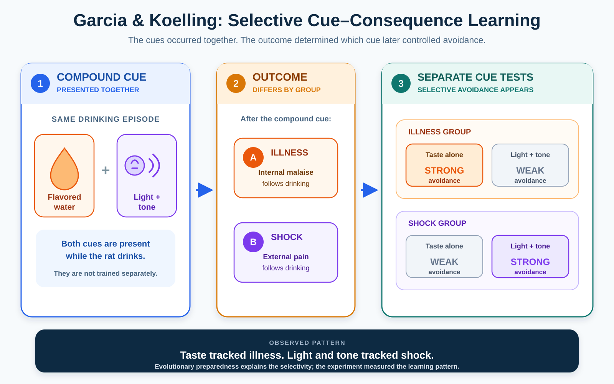
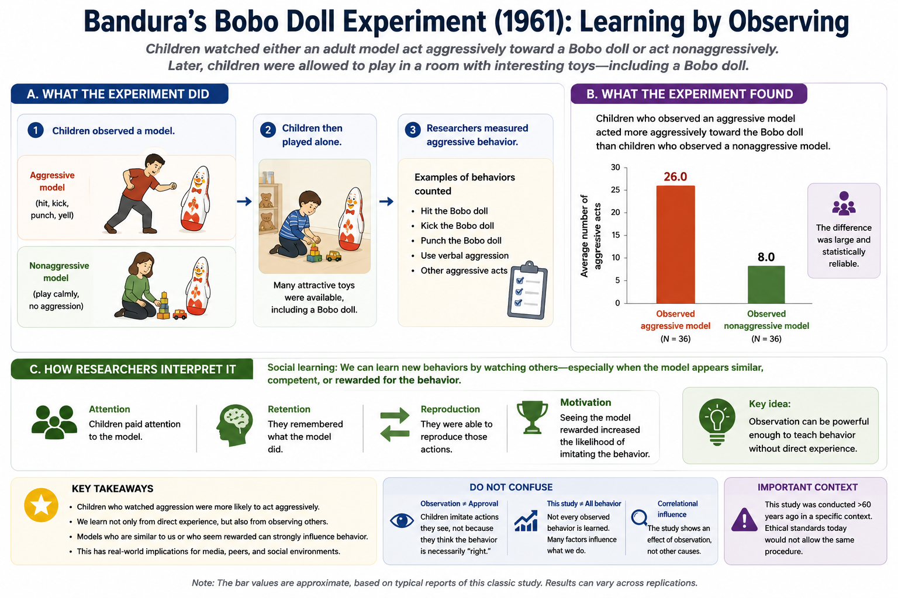

Learning
"Rewarding a behavior is basically the same as bribing someone, and it will eventually backfire."
Plenty of people are suspicious of reinforcement on exactly these grounds — give a kid candy for cleaning their room and you have not taught them to value tidiness, you have taught them to expect candy, and the whole arrangement seems destined to collapse the moment the candy stops. There is a real phenomenon buried in that worry — extrinsic rewards genuinely can undermine intrinsic motivation under specific conditions (more on that in Section 4) — but the broader claim, that reinforcement is a cheap manipulation standing apart from how organisms "really" learn, gets the science backward. Reinforcement is not a trick humans invented to manipulate each other or their pets. It is one of the oldest learning processes built by natural selection, because tracking which behaviors and which stimuli predict good and bad outcomes is about as basic a survival problem as exists. A nervous system that could not learn "this behavior got me food" or "this sound means danger is coming" would be a nervous system perpetually starting from scratch.
This chapter is built around two of the most thoroughly studied learning processes in psychology — classical conditioning, in which one stimulus comes to predict another, and operant conditioning, in which behavior changes as a function of its consequences — plus forms of learning that do not reduce neatly to either one. Organisms learn by watching others. They learn the layout of an environment before a reward gives them a reason to show it. And neural signals can register the difference between what was expected and what actually happened. The deeper thread is not simply that experience changes behavior. It is that learning and current performance are not the same thing. What an organism has learned may remain hidden, suppressed, or unused until the situation makes it visible.
Where This Fits
Chapter 4 asked how an organism extracts useful information from its environment. This chapter asks how experience changes which cues and actions matter. In the animal-model sequence, an organism takes in information, learns which events predict food, danger, or opportunity, and stores those relationships for later use. Chapter 8 turns to that final step. The question that organizes the chapter is why can learning occur without being visible in behavior? Behavior is not a transparent readout of learning: organisms can learn without showing it, and old learning can survive after responding declines. Two cases organize the chapter:
- Extinction shows that new learning can compete with old learning without simply erasing it.
- Bandura and Tolman show the other side of the same distinction: learning can occur before behavior reveals it.
These principles return in Chapter 13, where exposure therapy uses expectancy violation and inhibitory learning rather than deleting fear, and in Chapter 11, where behavior can spread through observation without direct reinforcement of every learner.
Learning Objectives
- Distinguish classical conditioning from operant conditioning by identifying whether a stimulus predicts another stimulus or a behavior is being changed by its consequences (APA IPI Theme 2: psychology explains general principles that apply across many situations).
- Diagram a classical-conditioning scenario using UCS, UCR, CS, and CR, and explain how acquisition, extinction, spontaneous recovery, generalization, and discrimination change responding over time.
- Differentiate positive reinforcement, negative reinforcement, positive punishment, and negative punishment, and correctly classify a novel scenario into one of the four.
- Explain how shaping and schedules of reinforcement influence the development and persistence of behavior without treating any schedule effect as universal across all tasks and species.
- Describe the selective cue–consequence pattern demonstrated by Garcia and Koelling, then distinguish that observed pattern from its evolutionary interpretation (APA IPI Theme 3: biological, psychological, and social factors interact).
- Use Bandura's and Tolman's findings to explain why learning must be distinguished from immediate performance and from direct reinforcement (APA IPI Theme 1: psychological science relies on evidence and revises itself as it accumulates).
- Interpret cue, expected-reward, and omission responses as reward-prediction-error signals, and explain why this evidence does not make dopamine a universal pleasure or motivation chemical.
Section 1: Classical Conditioning — Learning What Predicts What
Ivan Pavlov did not set out to discover one of psychology's foundational learning processes. He was a physiologist studying canine digestion, carefully measuring how much a dog salivated in response to food in its mouth, work serious enough to earn him a Nobel Prize in 1904. The discovery that made him famous was, by his own account, an annoyance: his laboratory dogs began salivating before the food ever arrived, triggered by the sight of the technician who normally delivered it or the sound of the food cart in the hallway. Most scientists would have treated this as measurement noise to be controlled away. Pavlov treated it as the actual phenomenon worth studying and spent much of the rest of his career mapping how a previously unimportant stimulus comes to predict something biologically significant (Pavlov, 1927).
Classical conditioning is the process by which one stimulus comes to predict another. The unconditioned stimulus (UCS) is something that reliably produces a response without the relevant learning — food in a dog's mouth, a loud noise, a puff of air to the eye. The unconditioned response (UCR) is that automatic reaction — salivation, a startle, a blink. The conditioned stimulus (CS) is the originally neutral or uninformative stimulus — a tone, a light, a particular room — that comes to predict the UCS. The conditioned response (CR) is the learned response elicited by the CS. It is often similar to the UCR, but it is produced by a different stimulus and can prepare the organism for what is coming rather than merely copy the original reaction.
Repeated pairing often produces conditioning, but repetition is not the whole mechanism. What matters is whether the CS adds useful information. Imagine that a puff of air occurs on half the trials when a tone sounds — but also on half the trials when the tone is absent. The tone and puff are paired repeatedly, yet the tone does not improve prediction: the puff is just as likely without it. Conditioning becomes much stronger when the UCS is more probable in the presence of the CS than in its absence. This relationship is called contingency. It is why "learning what predicts what" is more precise than "learning what occurred nearby" (Rescorla, 1968).

Using your own example, identify the UCS, UCR, CS, and CR. Then ask the more difficult question: does the CS actually improve prediction of the UCS, or do the two merely occur near each other?
Acquisition is the initial learning period, when the CS begins to predict the UCS and conditioned responding develops. If the CS later occurs repeatedly without the UCS — Pavlov's tone sounds but food never follows — responding weakens. This is extinction. Extinction does not reliably return the organism to its pre-learning state. Instead, the organism learns a new relationship: in this context, the CS no longer predicts the UCS.
That distinction explains why extinguished responding can return. Spontaneous recovery is the reappearance of a weakened CR after time has passed. Renewal is the return of responding when the CS is encountered outside the context in which extinction occurred. Reinstatement and stress can also help older learning regain control. Extinction begins with a prediction error: the expected UCS fails to arrive. That mismatch teaches a new, context-sensitive relationship that competes with acquisition while leaving the earlier learning available.
![Three-stage infographic separating inferred learning from observed responding. Acquisition shows Bell to Food learning with salivation rising. During extinction, the earlier Bell to Food relationship remains visible while a new Bell plus extinction context to No food relationship controls behavior and salivation falls. After time or a context change, the earlier learning may regain influence and salivation may return. A lower curve is explicitly labeled observed responding, not association strength.](../images/ch07/fig_extinction_not_erasure.png)
Two more processes round out the basic toolkit. Generalization is the tendency for a CR to occur to stimuli that resemble the original CS. A dog conditioned to one tone may also salivate to a similar tone that was never paired with food. Discrimination is learning to respond differently to similar stimuli because they predict different outcomes. These are not opposite theories. Generalization can occur because two cues are perceptually difficult to distinguish or because the organism has not learned that their differences predict different outcomes. Discrimination requires both detecting a difference and learning that the difference matters. This is where sensation and learning meet: experience can sharpen responding only when the sensory system provides information that can be used.
In 1920, John B. Watson and Rosalie Rayner attempted to condition fear in an infant they called "Albert B." Albert initially showed little fear of a white rat. Watson and Rayner then paired the rat with a loud noise made by striking a steel bar behind him. After several pairings, Albert sometimes cried, withdrew, or tried to move away when the rat appeared without the noise. Watson and Rayner also reported responses to other furry objects, which they interpreted as generalization (Watson & Rayner, 1920).
Little Albert is memorable, but it is weak evidence by modern standards: one infant, no control group, inconsistent response measurement, and uncertain generalization. The ethics are clearer. Watson and Rayner deliberately produced distress and did not complete a deconditioning procedure before Albert left the hospital. Treat the study as a historically important, ethically troubling illustration of conditioned emotional responding — not as a definitive explanation of how human phobias develop (Harris, 1979).
What did Watson and Rayner claim to demonstrate? Then identify two reasons the study cannot carry the evidential weight that later textbook retellings often give it.
Classical conditioning is about a stimulus predicting another stimulus, and the resulting response is elicited by the CS. Operant conditioning is about a behavior changing because of what follows it, and the behavior is emitted by the organism. Conscious choice is not the dividing line; a well-practiced operant can feel automatic. Diagnostic question: a child who once cried during a painful dental visit now feels anxious while walking past the dentist's building. Classical or operant? (Classical: the building has become a CS that predicts the aversive dental experience.) A child who learns that whining at the grocery store sometimes produces candy and therefore whines more often is showing operant conditioning: the behavior changed because of its consequence.
Try it yourself: the Classical Conditioning Lab uses a simplified teaching model to show acquisition, extinction, and spontaneous recovery. Treat its curve as a model of possible response change, not as data that prove a particular biological storage mechanism.
Section 2: Operant Conditioning — Learning from Consequences
If classical conditioning is about what predicts what, operant conditioning is about what your own behavior gets you. Edward Thorndike studied cats escaping from puzzle boxes. The cats did not solve the problem through sudden insight; ineffective actions gradually dropped out while successful actions occurred sooner across trials. Thorndike summarized this as the law of effect: behaviors followed by satisfying consequences become more likely to recur, while behaviors followed by discomforting consequences become less likely (Thorndike, 1911). B. F. Skinner later built an experimental framework around the same basic principle, using controlled chambers in which a rat or pigeon could press a lever or peck a key and have its response rate measured precisely (Skinner, 1938).
Reinforcement is any consequence that increases the future likelihood of the behavior it follows; punishment is any consequence that decreases it. Positive and negative describe adding and removing, not good and bad. Positive reinforcement adds a stimulus and behavior increases. Negative reinforcement removes an aversive stimulus and behavior increases. Positive punishment adds a stimulus and behavior decreases. Negative punishment removes a stimulus and behavior decreases. These labels describe observed functional relationships. A treat is not automatically a reinforcer; it counts as reinforcement only if the target behavior subsequently becomes more likely.
| Something added | Something removed | |
|---|---|---|
| Behavior increases | Positive reinforcement (treat after sitting) | Negative reinforcement (chime stops when seatbelt buckled) |
| Behavior decreases | Positive punishment (scolded after hitting) | Negative punishment (phone taken after curfew) |

Negative reinforcement increases behavior by removing something aversive; punishment decreases behavior. Diagnostic question: a driver buckles their seatbelt to stop an irritating chime, and buckling becomes more frequent. This is negative reinforcement. A dog jumps on guests, receives a water spray, and jumps less often. This is positive punishment. The everyday pleasantness of the outcome does not determine the category. The direction of behavior change does.
In one sentence, what do positive and negative mean in operant-conditioning terminology, and what do reinforcement and punishment mean?
Not every response is reinforced every time. A schedule of reinforcement specifies which responses produce reinforcement. A fixed-ratio schedule reinforces after a set number of responses, often producing rapid responding followed by a post-reinforcement pause. A variable-ratio schedule reinforces after an unpredictable number of responses around an average and often produces high, steady responding. A fixed-interval schedule reinforces the first response after a set period has elapsed, often producing a pause followed by accelerating responding as the interval approaches. A variable-interval schedule reinforces the first response after changing, unpredictable intervals and often produces steady, moderate responding.
These are characteristic patterns from controlled preparations, not laws that make every real-world behavior look identical. Species, task, reinforcement history, and the exact contingency matter. Under common laboratory conditions, intermittently reinforced behavior — especially behavior established on variable-ratio schedules — can persist longer during extinction than continuously or predictably reinforced behavior. The safe conclusion is not "unpredictability always makes behavior impossible to extinguish." It is that reinforcement history changes what the absence of reinforcement means.

Shaping builds behavior by reinforcing successive approximations of a target. A trainer does not wait indefinitely for a pigeon to peck one precise spot. The trainer first reinforces movement toward the spot, then closer approaches, then the peck itself, progressively raising the criterion (Skinner, 1951). The same logic appears when a coach reinforces parts of a complex movement before requiring the full sequence. Shaping works because reinforcement can select a path toward behavior that does not yet occur in its final form.
Repeated operant sequences can become habits: actions that are rapidly triggered by familiar cues with little deliberation. Habits are efficient because they compress repeated learning into a ready response. That efficiency has a cost. A behavior can continue after the outcome that originally supported it has changed, illustrating the same stability-versus-flexibility trade-off seen in extinction.
Punishment can suppress behavior, but suppression is not the same as teaching an alternative. Punishment may also produce avoidance of the punishing person or setting, fear, concealment, or aggression. Applied behavior change therefore works better when reduction of an unwanted behavior is paired with reinforcement of a specific replacement behavior. Reinforcement teaches what to do next.
Think of a complex skill you learned step by step. What were the successive approximations, and what consequences made some attempts more likely to be repeated?
Section 3: Biological Constraints and Learning Without Immediate Performance
Classical and operant conditioning are general processes, but general does not mean unconstrained. Learning depends on the organism doing the learning, the cues available to it, and the consequences those cues have historically predicted. This section adds a second boundary: what an organism has learned is not always visible in what it is doing right now.
Garcia and Koelling: Selective Cue–Consequence Learning
John Garcia and Robert Koelling gave rats flavored water accompanied by audiovisual cues and then exposed different groups to illness or shock. Rats that became ill readily avoided the taste but showed much weaker avoidance of the audiovisual cues. Rats that received shock showed the reverse pattern: they avoided the audiovisual cues more readily than the taste (Garcia & Koelling, 1966). The result challenged the idea that any cue can be associated equally easily with any consequence.
Psychologists use preparedness for this selective ease of learning some relationships over others. The directly demonstrated result is the crossed pattern: taste was readily associated with illness, while audiovisual cues were readily associated with shock. The leading evolutionary interpretation is that nervous systems were shaped by recurrent ecological relationships — ingested toxins predict illness; external sights and sounds predict physical danger. That interpretation fits the evidence and comparative logic, but Garcia and Koelling did not directly observe evolutionary history. At the proximate level, learning favors certain cue–consequence pairings. At the ultimate level, natural selection offers the leading explanation for that bias.
{kind=link}

First state the observed pattern without explaining it. Which cue was learned readily with illness, and which with shock? Then state the evolutionary interpretation as an inference rather than as the observation itself.
Bandura and the Bobo Doll: Learning by Watching
Conditioning usually gives the learner direct experience with a pairing or consequence. Observational learning allows behavior to be acquired by watching someone else. In Bandura, Ross, and Ross's 1961 study, children who watched an adult behave aggressively toward a Bobo doll later reproduced more of the model's distinctive aggressive actions and phrases than children who watched a nonaggressive model (Bandura, Ross, & Ross, 1961). The child did not need to be directly reinforced for each action before reproducing it.
Bandura's 1965 follow-up separated learning from performance more sharply. Children watched an aggressive model who was rewarded, punished, or received no consequence. Before any reward was offered to the children themselves, the model-punished group performed fewer of the observed actions; the rewarded and no-consequence groups were much more similar than a simple three-step ranking would imply. When all children were then offered direct incentives to reproduce the model's actions, group differences narrowed sharply (Bandura, 1965). The most defensible conclusion is that observed consequences affected whether learned behavior was performed. Low imitation did not mean nothing had been learned.
{kind=link}

Tolman and Honzik: Learning Before Reward Reveals It
Edward Tolman argued that organisms can learn environmental structure before reinforcement makes that learning visible. Tolman and Honzik ran rats through a maze. One group received food at the goal from the beginning; another never received food; a third received no food for ten days and then began receiving it on day eleven. The delayed-reward group initially looked much like the never-rewarded group, then improved rapidly after food was introduced (Tolman & Honzik, 1930).
The result supports latent learning: learning that is not immediately expressed in behavior. Tolman described the acquired representation as a cognitive map. The rapid improvement is strong evidence that experience before day eleven mattered. It does not, by itself, reveal every detail of the internal representation. What it establishes most clearly is the chapter's larger point: behavior can underestimate learning when the organism has no reason to display what it knows.

Think of something you learned incidentally — the layout of a building, lyrics you never tried to memorize, or a route you have never driven yourself. What would make that learning become visible in your behavior?
Section 4: Dopamine, Prediction Error, and Motivation
Extinction showed the broader learning logic: when outcomes violate expectations, learning updates. Reward prediction error is one well-studied neural signal that tracks this mismatch for rewards. In classic primate recordings, some dopamine neurons responded strongly to an unexpected reward. After a cue reliably predicted that reward, the phasic response shifted from the reward to the cue. When the expected reward was omitted, firing briefly dipped below baseline at the time the reward should have occurred (Schultz, Dayan, & Montague, 1997).
This pattern does not mean that dopamine stores the prediction or performs all learning by itself. It means that activity in a well-studied subset of dopamine neurons behaves like a signed teaching signal: better than expected, as expected, or worse than expected. That signal can help update the value assigned to cues and actions. It is a more precise correction to the "pleasure chemical" myth than replacing pleasure with an equally broad claim about anticipation.

Wanting is the motivational pull a cue or reward exerts on behavior; liking is the pleasure produced by receiving it. They can come apart, including in addiction. The distinction is useful, but it is not one universal account of dopamine: effects depend on pathway, receptor, task, and timescale (Berridge & Robinson, 1998; Berke, 2018).
A cue predicts a reward. After learning, what should happen to the phasic signal at the cue, at an expected reward, and when the expected reward is omitted? Answer before looking back at Figure 7.9.
External Rewards and Intrinsic Motivation
Intrinsic motivation means engaging in an activity for its own sake; extrinsic motivation means acting for a separable outcome such as money, a grade, or approval. They can interact. In Deci's classic study, participants initially worked on an engaging puzzle. One group was paid during a middle session; a control group was not. Later, when payment and observation were removed, the previously paid group spent less free-choice time on the puzzles than the control group (Deci, 1971).
This pattern is often called the overjustification effect, but the boundary conditions matter. The finding does not show that all rewards destroy motivation. Effects depend on whether the activity was initially interesting, whether the reward was expected, whether it was contingent on merely doing the task or on competence, and what outcome is measured. The useful lesson is narrower: adding an external reason can sometimes change how a person interprets why they are acting.
Chapter Summary
Classical conditioning is learning that one stimulus predicts another. UCS, UCR, CS, and CR identify the unlearned stimulus-response relation and the learned predictive cue. Acquisition depends on predictive contingency, not repetition alone. Extinction weakens responding by adding new, context-sensitive learning; spontaneous recovery and renewal show why reduced responding does not prove erasure. Little Albert is historically influential and ethically important, but its single-case design and uneven record make it an illustration rather than definitive evidence about phobias.
Operant conditioning changes behavior through consequences. Reinforcement increases behavior; punishment decreases it; positive and negative mean adding and removing. Shaping builds new behavior through successive approximations. Reinforcement schedules produce characteristic response patterns, but their effects depend on the exact contingency, task, species, and learning history. Habits and extinction both expose a stability-versus-flexibility trade-off: past learning can continue to guide behavior after conditions change.
Learning is constrained, and current behavior is not a transparent readout of what has been learned. Garcia and Koelling demonstrated selective cue–consequence learning; an evolutionary history of recurrent ecological pairings is a strong interpretation rather than the observation itself. Bandura showed that observing a model can produce learning before the observer performs the behavior. Tolman and Honzik showed that experience in a maze can matter before reward reveals what was learned.
Reward-prediction-error signals provide a neural example of updating: some dopamine neurons respond when outcomes are better or worse than expected and shift their response to predictive cues. This does not make dopamine a universal pleasure or motivation chemical. Intrinsic and extrinsic motivation can also interact; external rewards sometimes undermine later free-choice engagement, but not under every condition.
Connections
| Concept from this chapter | Reappears in | Why it matters there |
|---|---|---|
| Extinction | Ch. 13 — Psychological Disorders & Therapy | Exposure therapy uses expectancy violation and inhibitory learning; treatment reduces fear without guaranteeing that the original association has been erased |
| Little Albert and conditioned fear | Ch. 13 — Psychological Disorders & Therapy | Fear conditioning is one contributor to some fears and phobias, while the study itself illustrates why vivid historical cases need methods scrutiny |
| Preparedness | Ch. 1 — History & Approaches | The observed selective-learning pattern and its evolutionary interpretation provide a worked example of separating evidence from adaptive explanation |
| Observational learning | Ch. 11 — Social Psychology | Behavior, norms, and aggression can spread through observation without direct reinforcement of every learner |
| Latent learning | Ch. 8 — Memory | Stored information can influence later behavior even when current performance does not reveal that it was learned |
| Reward prediction error | Ch. 3 — Neuroscience and Biological Bases | A transmitter's function depends on circuit, timing, and task; one well-studied signal should not become a one-chemical explanation |
| Intrinsic and extrinsic motivation | Ch. 12 — Emotion, Stress & Coping | Motivation depends on how an activity and its consequences are interpreted, not simply on adding more reward |
Review Questions
1. A dog has learned to drool at the sound of a can opener because the sound reliably precedes a meal. In this scenario, the sound of the can opener is the:
Show answer & rationale
Answer: c. Why (a) is tempting: the can opener reliably produces drooling now, but it does so only because of learning. Food is the stimulus that produces salivation without that learned history.
2. A tone has been paired with shock until it elicits fear. The tone is then presented repeatedly without shock and fear declines. Later, the tone produces fear again in a different room. Which conclusion best connects classical and operant extinction?
Show answer & rationale
Answer: a. Why (c) is tempting: responding became weak, which can look like erasure. Return of responding after time or context change shows why performance during extinction cannot by itself establish that earlier learning disappeared.
3. A driver fastens their seatbelt because doing so stops an irritating chime. Over time, the driver fastens it more quickly. This is:
Show answer & rationale
Answer: d. Why (a) is tempting: the chime is unpleasant, but the target behavior increases and removes an aversive stimulus. That is negative reinforcement.
4. In a laboratory, a rat receives food after an unpredictable number of lever presses. When food delivery stops, lever pressing persists for many trials. Which statement is most defensible?
Show answer & rationale
Answer: b. Why (c) is tempting: variable-ratio responding can be highly persistent under common laboratory conditions, but schedule effects depend on the organism, task, contingency, and reinforcement history. Persistent does not mean permanent.
5. A trainer rewards a dog first for lying down, then for turning onto its side, then for rolling halfway, and finally for rolling over completely. This is:
Show answer & rationale
Answer: b. Why (a) is tempting: both involve learning, but the trainer is selecting successive approximations of a behavior through consequences rather than pairing two stimuli.
6. Garcia and Koelling found that rats learned taste–illness and audiovisual-cue–shock relationships more readily than the crossed relationships. Which statement separates observation from interpretation correctly?
Show answer & rationale
Answer: c. Why (a) is tempting: the evolutionary account is plausible and useful, but the experiment measured learning in rats, not the historical process that produced the bias.
7. In Bandura's 1965 study, children who saw a model punished initially imitated less. When all children were later offered direct incentives to reproduce the model's actions, group differences narrowed. This best supports the conclusion that:
Show answer & rationale
Answer: a. Why (b) is tempting: low initial imitation looks like low learning. The later incentive test revealed behavior that had been acquired but not previously performed.
8. Rats explored a maze without food for ten days, then improved rapidly when food was introduced. This result most directly supports:
Show answer & rationale
Answer: b. Why (c) is tempting: Tolman used the cognitive-map idea to interpret the learning, but the behavioral result establishes prior learning more directly than it establishes the exact format of the representation.
9. A cat freezes when it sees a cabinet where its paw was once pinched. The same cat paws at a pantry door more often because pawing sometimes produces food. Which classification is correct?
Show answer & rationale
Answer: d. Why (c) is tempting: freezing is an action, but it is elicited by a cue that predicts an aversive event. Pawing changes because of the consequence it produces.
10. After learning, a cue reliably predicts juice. Which pattern best matches a reward-prediction-error account in the studied dopamine neurons?
Show answer & rationale
Answer: c. Why (a) is tempting: both the cue and juice matter during learning, but once the cue fully predicts the juice, the phasic error shifts to the cue and the expected juice produces little additional error.
11. Students initially enjoy solving a puzzle. One group is promised money for each puzzle during a middle session; another group is not. Later, with no money offered and no one watching, the previously paid group spends less free-choice time on the puzzle. Which conclusion is warranted?
Show answer & rationale
Answer: a. Why (b) is tempting: the study demonstrates a real reduction under these conditions, but it does not justify a universal claim about every reward, task, or measure of motivation.
Key Terms
- Acquisition
- The period during which a CS becomes informative about a UCS and conditioned responding develops.
- Classical conditioning
- Learning in which one stimulus comes to predict another and elicits a conditioned response.
- Cognitive map
- Tolman's term for an internal representation of spatial or relational structure, acquired through experience independent of reinforcement.
- Conditioned response (CR)
- A learned response elicited by a conditioned stimulus.
- Conditioned stimulus (CS)
- A stimulus that comes to predict an unconditioned stimulus through learning.
- Contingency
- The degree to which a cue improves prediction of an outcome compared with the outcome's probability when the cue is absent.
- Discrimination
- Learning to respond differently to similar stimuli because they predict different outcomes.
- Elicited
- Produced automatically by a preceding stimulus, as a conditioned or unconditioned response is; contrasted with behavior that is emitted.
- Emitted
- Produced by the organism rather than triggered by a preceding stimulus, as operant behavior is; contrasted with behavior that is elicited.
- Extinction
- A decline in conditioned or operant responding when the expected outcome no longer follows; the decline does not by itself prove erasure of earlier learning.
- Extrinsic motivation
- Acting for a separable outcome such as money, a grade, or approval, rather than for the activity's own sake.
- Fixed-interval
- A reinforcement schedule that reinforces the first response after a set period has elapsed, often producing a pause followed by accelerating responding.
- Fixed-ratio
- A reinforcement schedule that reinforces after a set number of responses, often producing rapid responding followed by a post-reinforcement pause.
- Generalization
- Extension of learned responding to stimuli or situations resembling the original one.
- Habits
- Actions rapidly triggered by familiar cues with little deliberation, formed through repeated operant learning; efficient, but capable of persisting after the outcome that originally supported them has changed.
- Intrinsic motivation
- Engaging in an activity for its own sake rather than for a separable outcome.
- Latent learning
- Learning that occurs before it is visible in performance and becomes apparent when conditions provide a reason to use it.
- Law of effect
- Thorndike's principle that behaviors followed by satisfying consequences become more likely to recur, while behaviors followed by discomforting consequences become less likely.
- Negative reinforcement
- A consequence that increases behavior by removing or preventing an aversive stimulus.
- Observational learning
- Acquiring information or behavior by watching others without requiring direct reinforcement of the observer.
- Operant conditioning
- Learning in which consequences change the future probability of behavior.
- Overjustification effect
- Reduced later intrinsic engagement that can occur when expected external rewards are introduced for an already interesting activity.
- Preparedness
- Selective ease of learning some cue–consequence relationships more readily than others.
- Punishment
- A consequence that decreases the future probability of behavior.
- Reinforcement
- A consequence that increases the future probability of behavior.
- Reward prediction error
- The signed difference between an expected reward and the reward that actually occurs.
- Schedule of reinforcement
- The rule specifying which responses or elapsed intervals produce reinforcement.
- Shaping
- Building behavior by reinforcing successive approximations toward a target response.
- Spontaneous recovery
- The return of conditioned responding after extinction and a period without exposure to the CS.
- Unconditioned response (UCR)
- A response elicited by an unconditioned stimulus without the relevant conditioning history.
- Unconditioned stimulus (UCS)
- A stimulus that elicits an unconditioned response without the relevant conditioning history.
- Variable-interval
- A reinforcement schedule that reinforces the first response after changing, unpredictable intervals, often producing steady, moderate responding.
- Variable-ratio
- A reinforcement schedule that reinforces after an unpredictable number of responses around an average, often producing high, steady responding.
Further Reading
Bouton, M. E. (2026). Conditioning and learning. Noba Project. Retrieved from https://nobaproject.com/modules/conditioning-and-learning
A freely available treatment of classical and operant conditioning, extinction, and observational learning.
Harris, B. (1979). Whatever happened to Little Albert? American Psychologist, 34(2), 151–160.
A careful historical examination of how a small, ambiguous study became a much cleaner textbook story.
Skinner, B. F. (1951). How to teach animals. Scientific American, 185(6), 26–29.
Skinner's accessible explanation of shaping through successive approximations.
Sapolsky, R. (2011, February 15). Dopamine jackpot! [Pritzker Lecture]. California Academy of Sciences.
A vivid public lecture on dopamine and anticipation. Compare its broad framing with the cue, expected-reward, and omission pattern described in Section 4.
Berke, J. D. (2018). What does dopamine mean? Nature Neuroscience, 21, 787–793.
A concise review of why dopamine's roles in learning, motivation, and action should not be collapsed into one slogan.
References
Full citations for factual claims made in this chapter. Further Reading above is curated separately for student exploration.
Full citations for factual claims made in this chapter, for instructors or students who want to verify or go deeper. Distinct from Further Reading above, which is curated for student exploration rather than completeness.
Bandura, A. (1965). Influence of models' reinforcement contingencies on the acquisition of imitative responses. Journal of Personality and Social Psychology, 1(6), 589–595.
Bandura, A., Ross, D., & Ross, S. A. (1961). Transmission of aggression through imitation of aggressive models. Journal of Abnormal and Social Psychology, 63(3), 575–582.
Berke, J. D. (2018). What does dopamine mean? Nature Neuroscience, 21, 787–793.
Berridge, K. C., & Robinson, T. E. (1998). What is the role of dopamine in reward: Hedonic impact, reward learning, or incentive salience? Brain Research Reviews, 28(3), 309–369.
Deci, E. L. (1971). Effects of externally mediated rewards on intrinsic motivation. Journal of Personality and Social Psychology, 18(1), 105–115.
Garcia, J., & Koelling, R. A. (1966). Relation of cue to consequence in avoidance learning. Psychonomic Science, 4(1), 123–124.
Harris, B. (1979). Whatever happened to Little Albert? American Psychologist, 34(2), 151–160.
Pavlov, I. P. (1927). Conditioned reflexes: An investigation of the physiological activity of the cerebral cortex (G. V. Anrep, Trans.). Oxford University Press.
Rescorla, R. A. (1968). Probability of shock in the presence and absence of CS in fear conditioning. Journal of Comparative and Physiological Psychology, 66(1), 1–5.
Sapolsky, R. (2011, February 15). Dopamine jackpot! [Pritzker Lecture]. California Academy of Sciences.
Schultz, W., Dayan, P., & Montague, P. R. (1997). A neural substrate of prediction and reward. Science, 275(5306), 1593–1599.
Skinner, B. F. (1938). The behavior of organisms: An experimental analysis. Appleton-Century.
Skinner, B. F. (1951). How to teach animals. Scientific American, 185(6), 26–29.
Thorndike, E. L. (1911). Animal intelligence: Experimental studies. Macmillan.
Tolman, E. C., & Honzik, C. H. (1930). Introduction and removal of reward, and maze performance in rats. University of California Publications in Psychology, 4, 257–275.
Watson, J. B., & Rayner, R. (1920). Conditioned emotional reactions. Journal of Experimental Psychology, 3(1), 1–14.